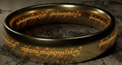

Sagan om Ringen
Denna handlar om äventyret är baserat på böckerna skrivna av j.r.r tolkien. Filmen handlar om en
Hobbit vid namn frodo hittar en ring som hans farbror hittade under hans äventyr. Ringen är en mycket
kraftig ring och måste förstöras med alla medel. Frodo måste föra ringen till där den gjordes nämligen
till eldfloden vid mount doom som det heter som ligger i deras största fiendes territorium.
Till hans hjälp har han medhjälpare som väljer att följa med honom och skydda ringen. skulle ringen hamna
i fiendernas händer går världen under.
Kommer lista dessa 3 filmer som är gjord efter varje bok.
Men det kom ut 3 filmer till några år senare som utspelar sig hur ringen kom i ägo till frodos farbror
Gillar man fantasy kommer man älska dessa filmer.
- Sagan om ringen
- Sagan om de två tornen
- Sagan om konungens återkomst
Filmerna som kom några år senare
- Hobbit: En oväntad resa
- Hobbiy: Smaugs ödemark
- Hobbiy: Femhäraslaget
FILMSIDAN